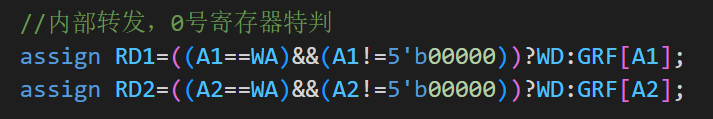
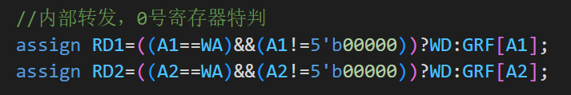

P5设计文档
5级流水线CPU
支持指令
add, sub, ori, lw, sw, beq, lui, j, jr, jal, nop
(其中add，sub为无符号加减法)
| Instuction | |
|---|---|
| add | GPR[rd] = GPR[rs] + GPR[rt] |
| sub | GPR[rd] = GPR[rs] - GPR[rt] |
| ori | GPR[rt] = GPR[rs] | ZeroExt(Imm) |
| lui | GPR[rt] = {imm, 16’b0} |
| lw | R[rt] = Mem[GPR[rs]+sign_ext(offset)] |
| sw | Mem[GPR[rs]+sign_ext(offset)] = R[rt] |
| beq | if (GPR[rs] == GPR[rt]) PC = PC + 4 + BranchAddr |
| j | PC = JumpAddr |
| jal | PC = JumpAddr; GPR[31] = PC + 4 |
| jr | PC = GPR[rs] |
五个阶段
| 阶段 | 简称 | 功能概述 |
|---|---|---|
| 取指阶段 (Fetch) | F | 从指令存储器中读取指令 |
| 译码阶段 (Decode) | D | 从寄存器文件中读取源操作数并对指令译码以便得到控制信号 |
| 执行阶段 (Execute) | E | 使用ALU执行计算 |
| 存储阶段 (Memory) | M | 读或写数据存储器 |
| 写回阶段 (Writeback) | W | 将结果写回到寄存器文件 |
关键数据通路

流程模块设计
CU模块设计
- 相较P4，省去RegWrite信号，直接译出当前指令需要写入的地址，如不需写入，默认写至0，在写入GRF时直接略去
- 直接译出当前指令rs, rt, rd, shamt, imm16, imm26以及所有控制信号供每个阶段选取使用，还需译出Tuse_rs/rt以及E_Tnew与M_Tnew，各级输出对应信号至Conflict模块
- 将指令分类，分为：cal_r, cal_i, load, save, branch, shift, jreg, jadd, jlink（ori被归为cal_i）
| Port name | Direction | Type | Description |
|---|---|---|---|
| Ins | input | [31:0] | 当级指令 |
| branchTrue | input | 分支控制信号 | |
| 控制信号 | |||
| GRF_WA | output | [4:0] | 写入的地址 |
| GRF_WDSrc | output | [2:0] | 写入数据选择 |
| ALUSrc | output | ALU_B的数据源选择 | |
| ALUSelect | output | [2:0] | ALU运算类型选择 |
| MemWrite | output | 内存写入控制 | |
| EXTSelect | output | EXT位拓展类型选择 | |
| BranchSelect | output | [2:0] | branch判断类型选择 |
| NPCSelect | output | [2:0] | NPC类型选择 |
| ByteLW | output | 字节写入读出控制 | |
| 指令译码 | |||
| opcode | output | [5:0] | |
| funct | output | ||
| rs | output | [4:0] | |
| rt | output | ||
| rd | output | ||
| shamt | output | [4:0] | |
| imm16 | output | [15:0] | |
| imm26 | output | [25:0] | |
| T计算 | |||
| Tuse_rs | output | [1:0] | |
| Tuse_rt | output | [1:0] | |
| E_Tnew | output | [1:0] | |
| M_Tnew | output | [1:0] |
T计算表格
| Ins | Tuse_rs | Tuse_rt | E_Tnew | M_Tnew | W_Tnew | |
|---|---|---|---|---|---|---|
| cal_r | add||sub | 1 | 1 | 1 | 0 | 0 |
| cal_i | ori||lui | 1 | 1 | 0 | 0 | |
| load | lw | 2 | 2 | 1 | 0 | |
| save | sw | 1 | 2 | |||
| branch | beq | 0 | 0 | |||
| jreg | jr | 0 | ||||
| jadd | j||jal | |||||
| jlink | jal | 0 | 0 | 0 |
Conflit模块设计：AT控制阻塞，直接转发
阻塞：
- D级判断将要使用的寄存器数据是否能得到转发更新，即后续写入相同寄存器的Tnew是否有大于Tuse的，如果有则需要阻塞，以在后续能得到转发更新。特判0号寄存器不需要阻塞，能够直接获得数据0
- 需要得到D级指令rs, rt的Tuse，以及后续E, M级指令的Tnew，在各级CU中计算，发送至冲突单元（W级Tnew全是0不需要考虑，都可以内部转发解决）
- 阻塞时需要暂停更新PC以及F级读出的指令，并且清空D级当前指令的译码输出，以替换为nop空泡

转发
阻塞后，所有指令在需要读寄存器数据的时候都能够获得后续计算完毕的数据，每级转发出已算出的数据，发送给之前各级即可。
需要读寄存器：D级GRF，Branch计算需要rs, rt数据；E级ALU需要rs,rt 数据；M级DM写入数据口需要rt数据
需要写寄存器：E级可转发出D级算的PC+8；M级可转发出D级算的PC+8和E级算的的ALU_Y；W级可转发出D级算的PC+8，E级算的的ALU_Y和M级读出的DM数据。根据当前指令CU译码得到的GRF_WDSrc进行选择。此外还有W级寄存器写入，可直接内部转发至D级读出
 

- 在主模块中，获取各级需要读的寄存器编号（D_rs,D_rt,E_rs,E_rt,M_rt），寄存器原读数（D_rs_data,D_rt_data,E_rs_data,E_rt_data,M_rt_data），写入的寄存器编号（E_GRF_WA,M_GRF_WA,W_GRF_WA）和数据（E_GRF_WD,M_GRF_WD,W_GRF_WD）
- 比较读的编号和写的编号是否有相等的，如有相等的则代表有数据已经更新需要转发，转发优先级为更新次序，最后一次更新优先转发，即优先转发距离需要数据的阶段近的数据，特判如果需要读0号寄存器的数据，直接转发0
- 转发的数据（D_rs_fw,D_rt_fw,E_rs_fw,E_rt_fw,M_rt_fw）发送至各级需要的部分运算，并传递给下一级

五级模块设
每个阶段之间以寄存器隔开，寄存器设计在每个模块输出处，使用reg类型
每个阶段之间需要流水传递Ins，PC，传给各级CU以译码出当前阶段的rs，rt以及需要写入的地址和写入数据的选择
部分阶段前后间需要传递需要使用的NPC, EXTout, ALU_Y, DM_RD
1. Fetch
- 包含F_IFU，FDReg
- Fetch
| Port name | Direction | Type | Description |
|---|---|---|---|
| clk | input | ||
| reset | input | ||
| F_Flush | input | 清空延迟槽信号 | |
| F_Stall | input | 阻塞更新PC | |
| NPC | input | [31:0] | D级NPC计算出的NPC传入 |
| F_PC | output | [31:0] | F级直接传给NPC的F级PC，以直接计算F_PC+4 |
| F_Ins | [31:0] | 指令流水 | |
| FD寄存器 | |||
| D_Stall | input | 阻塞更新FD间寄存器 | |
| D_PC | output | reg [31:0] | <=F_PC |
| D_Ins | output | reg [31:0] | <=F_Ins |
- F_IFU
| Port name | Direction | Type | Description |
|---|---|---|---|
| clk | input | ||
| reset | input | ||
| F_Stall | input | ||
| NPC | input | [31:0] | |
| PC | output | [31:0] | |
| Ins | output | [31:0] |
2. Decode
- 包括D_CU, EXT, NPC (Branch), DEReg
| Port name | Direction | Type | Description |
|---|---|---|---|
| clk | input | ||
| reset | input | ||
| D_PC | input | [31:0] | PC流水 |
| D_Ins | input | [31:0] | 指令流水 |
| Conflict/Forward | |||
| Tuse_rs | output | [1:0] | AT算阻塞 |
| Tuse_rt | output | [1:0] | |
| D_rs | output | [4:0] | D级指令读寄存器的编号 |
| D_rt | output | [4:0] | |
| D_rs_data | output | [31:0] | D级指令读寄存器原数据 |
| D_rt_data | output | [31:0] | |
| D_rs_fw | input | [31:0] | D级转发后寄存器数据 |
| D_rt_fw | input | [31:0] | |
| EXT | |||
| imm16 | [15:0] | EXT输入 | |
| EXTSelect | EXT功能选择 | ||
| D_EXT_out | [31:0] | EXT输出 | |
| NPC | |||
| NPCSelect | [2:0] | 下一指令地址选择 | |
| branchTrue | 是否分支信号 | ||
| F_PC | input | [31:0] | 算NPC用 |
| NPC | output | [31:0] | 传给F级IFU |
| DEReg | |||
| E_Flush | input | 阻塞清空DE寄存器 | |
| E_PC | output | reg [31:0] | <=D_PC |
| E_Ins | output | reg [31:0] | <=D_Ins |
| E_rs_data | output | reg [31:0] | <=D_rs_fw |
| E_rt_data | output | reg [31:0] | <=D_rt_fw |
| E_EXT_out | output | reg [31:0] | <=D_EXT_out |
3. Execute
- 包括E_CU, ALU, EMReg
| Port name | Direction | Type | Description |
|---|---|---|---|
| clk | input | ||
| reset | input | ||
| E_PC | input | [31:0] | PC流水 |
| E_Ins | input | [31:0] | 指令流水 |
| Conflict/Forward | |||
| E_Tnew | output | [1:0] | AT算阻塞 |
| E_rs | output | [4:0] | E级指令读寄存器的编号 |
| E_rt | output | [4:0] | |
| E_rs_data | output | [31:0] | E级指令读寄存器原数据 |
| E_rt_data | output | [31:0] | |
| E_GRF_WA | output | [4:0] | E级指令写寄存器的编号 |
| E_rs_fw | input | [31:0] | E级接收转发后寄存器数据 |
| E_rt_fw | input | [31:0] | |
| GRF_WDSrc | [2:0] | E级指令写寄存器的数据选择 | |
| E_GRF_WD | output | [31:0] | E级指令写寄存器的数据 |
| ALU | |||
| E_EXT_out | input | [31:0] | |
| ALUSrc | ALU_B数据源选择 | ||
| ALUSelect | [2:0] | ALU功能选择 | |
| E_ALU_A | [31:0] | =E_rs_fw：ALU_A口数据 | |
| E_ALU_B | [31:0] | =E_rt_fw/E_EXT_out：ALU_B口数据 | |
| EMReg | |||
| M_PC | output | reg [31:0] | <=E_PC |
| M_Ins | output | reg [31:0] | <=E_Ins |
| M_ALU_Y | output | reg [31:0] | <=E_ALU_Y |
| M_rt_data | output | reg [31:0] | <=E_rt_fw |
- E_ALU
| Port name | Direction | Type | Description |
|---|---|---|---|
| op | input | [2:0] | |
| A | input | [31:0] | |
| B | input | [31:0] | |
| Y | output | [31:0] | |
| Greater | output | ||
| Equal | output | ||
| Less | output |
4. Memory
包括M_CU, DM
| Port name | Direction | Type | Description |
|---|---|---|---|
| clk | input | ||
| reset | input | ||
| M_PC | input | [31:0] | |
| M_Ins | input | [31:0] | |
| Conflict/Forward | |||
| M_Tnew | output | [1:0] | AT算阻塞 |
| M_rt | output | [4:0] | M级指令读寄存器编号 |
| M_rt_data | output | [31:0] | M级指令读寄存器数据 |
| M_rt_fw | input | [31:0] | M级接收转发后寄存器数据 |
| M_GRF_WA | output | [4:0] | M级指令写寄存器编号 |
| GRF_WDSrc | [2:0] | M级指令写寄存器数据选择 | |
| M_ALU_Y | input | [31:0] | 待转发的E级ALU计算结果 |
| M_GRF_WD | output | [31:0] | M级指令写寄存器数据 |
| DM | |||
| MemWrite | DM写使能 | ||
| DM_A | [31:0] | =M_ALU_Y：DM读写地址 | |
| DM_WD | [31:0] | =M_rt_fw：DM写入数据 | |
| DM_RD | [31:0] | DM读出数据 | |
| MWReg | |||
| W_PC | output | reg [31:0] | <=M_PC |
| W_Ins | output | reg [31:0] | <=M_Ins |
| W_ALU_Y | output | reg [31:0] | <=M_ALU_Y |
| W_DM_RD | output | reg [31:0] | <=DM_RD |
- M_DM
| Port name | Direction | Type | Description |
|---|---|---|---|
| reset | input | ||
| clk | input | ||
| WE | input | ||
| ByteLW | input | ||
| A | input | [31:0] | |
| WD | input | [31:0] | |
| RD | output | [31:0] | |
| PC | input | [31:0] |
5. Writeback
- 包括W_CU
| Port name | Direction | Type | Description |
|---|---|---|---|
| clk | input | ||
| reset | input | ||
| W_Ins | input | [31:0] | |
| W_PC | input | [31:0] | |
| Conflict/Forward | |||
| W_GRF_WA | output | [4:0] | W级指令写寄存器编号 |
| W_ALU_Y | input | [31:0] | 待转发的E级ALU计算结果 |
| W_DM_RD | input | [31:0] | 待转发的M级DM读出数据 |
| GRF_WDSrc | [2:0] | W级指令写寄存器数据选择 | |
| W_GRF_WD | output | [31:0] | W级指令写寄存器数据 |
测试
- 枚举各指令排列和之间距离
.text |

- 对0号寄存器读些测试

注意事项
- 需要寄存器数据进行运算或是向后传递的端口需要的是接收转发后正确的数据
- GRF不能实例化两次，数据不相通
- 读出0号寄存器时直接转发5’b00000。此时rs, rt的Tnew均为0
- 注意数据是否是直接发送，或是需要等待寄存器一个周期
思考题
- 提前分支判断也代表提前需要rs, rt寄存器数据，如之前为lw指令，则可能还需阻塞一周期。指令序列：
lw $t0,0($t2) |
- 因为延迟槽在处理的时候会将跳转前的必定执行的指令放在跳转指令后一句，此时PC+4处为延迟槽指令，跳转指令下一条实际距离跳转指令8字节，返回地址需保存PC+8
- 直接从功能部件转发会导致转发与接收转发两个阶段数据通路相连，导致指令指令最短周期必须大幅增加以保证数据可以在两阶段中完整流动，降低整体执行效率
- 如没有转发，W级写入数据在上升沿才能开始写入，而读出则在上升沿瞬间已经执行，寄存器堆中数据还没有更新。实现方法为判断写入数据寄存器编号是否和读出寄存器编号相等，如相等则直接读出即将写入的数据。当寄存器为0时，直接转发0
- 需求者：D级branch判断处以及NPC跳转地址处，E级ALU计算处，M级DM写入数据处
- 供给者：DEReg处写给$31的PC+8，EMReg处ALU计算结果，MW处DM读出数据
- branch指令需要拓展输入数据来源以及branch类型，并且可能需要把是否跳转的信号传值各级CU控制是否读写和PC来源选择
- GRF写入地址可能是寄存器读出的数据（？），可在Writeback级内部转发读出结果至写入地址
- 延迟槽可能需要清空，需要增加对FD寄存器的清空信号
- 译码器为一个输出包含输入指令的所有控制信号，指令分解部分，写入寄存器编号，读出寄存器编号，Tuse_rs，Tuse_rt，E_Tnew和M_Tnew。通过输入的指令全部译码，各流水级分别实例化，获取所需的控制信号与数据